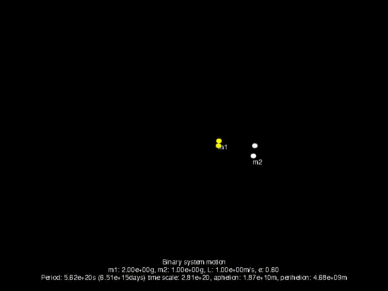
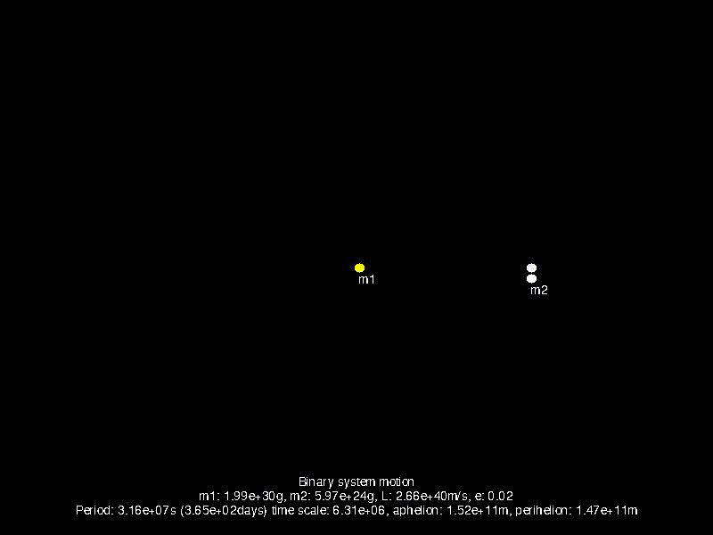

Kerpler's first law states that the motion of a planet is an ellipse with the sun as one of it's foci: $$r = {p \over 1 + \epsilon \cos(\theta)}$$ Newton's universal gravitation law is: $$\mathbf{F} = {{GM_1M_2} \over {\mathbf{r}^2}}$$ It can be then derived that: $$r = \frac{L^2 / \mu^2}{GM (1 + \epsilon \cos{\theta})}$$ where \(L\) is the orbital angular momentum, \(\mu = \frac{M_1M_2}{M_1+M_2}\), \(G = 6.6742867e-11 Nm^2kg^{-2}\), \(M = M_1+M_2\), \(\epsilon\) is the elliptical motion eccentricity and \(\theta\) is the angle from the focus (sun) to the orbit's aphelion. Also noteworthy is the fact that \(\mathbf{r} = \mathbf{r_2} - \mathbf{r_1}\) from a general reference frame, but using a reference from on the center of mass, we get \(\mathbf{r_1} = -\frac{\mu}{m_1}\mathbf{r}\) and \(\mathbf{r_2} = \frac{\mu}{m_2}\mathbf{r}\).
Here is the motion of to identical mass objects forming a binary system. We increase the ecentricity of the orbital elipse to emphasize the difference in motion of diffrent \(\epsilon\) values.
Here \(\epsilon\) is fixed to 0.6, and we gradually increase the mass of \(M_1\) (the yellow object).

Up to this point, the orbital velocity was constant (\(v_\theta = \pi/4 \text{ rad/s}\)). Using Kepler's second law as derived from Newton's equations, we can extract the proper orbital velocity of a binary system: $$\frac{\delta A}{\delta t} = \frac{r \delta r \delta \theta}{\delta t} = \frac{1}{2} \frac{L}{\mu}$$ $$\frac{\delta\theta}{\delta t} = \frac{L}{\mu r^2}\delta t \rightarrow \theta = \frac{Lt}{\mu r^2}$$ One caveat of using the proper angular velocity is that depending on the inputs, namely the angular monentum \(L\), then if we continue simulation in real-time the system, then a full orbit will take the orbital period \(P\). For instance, a system simulating the Earth orbiting the Sun would take 365.25 days to display the full orbit! Fortunately, using Kepler's Third Law as derived from Newton's equations: $$P^2 = \frac{4 \pi^2}{G(m_1+m_2)}a^3$$ once we know the period, we can apply a timescale proportional to the time period to display a full orbit in seconds. Here is an example of a binary system with small and similar masses:

Although the period of that system is about \(5.62 * 10^{15} \text{ days}\), we can properly time scale it and display the orbit and notice the acceleration when the masses passes close to the center of mass such that the area from the cener of mass to the moving body's motion is constant (as stated by Kepler's second law).
Here is another example using the Earth and the Sun:
